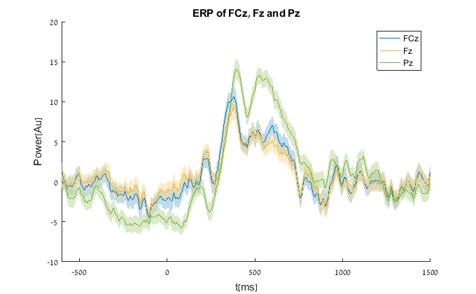

Extracy Analyzer Data
read csv data segment
Contents
folder and file name
ExportFolder = 'L:\Experiments\Matrix\MatrixV05\Data\EEG\Export - Yoni\'; FileName = 'MatrixV05_103_Raw Data Inspection';
read csv data
Description of first code block
datFile = [ExportFolder FileName '.dat']; VMRKfile = [ExportFolder FileName '.vmrk']; VHDRfile = [ExportFolder FileName '.vhdr']; [allData] = read_analyzer_UnsegmentedData(datFile); [metaData] = read_vhdr_commoninfos2(VHDRfile); [channel_names] = cellstr(read_vhdr_channels(VHDRfile)); [eventsCodesIndexes, artifactsIndexes]=read_markers_artifacts(VMRKfile);%check that this is the row of Mk1 indeed
using default row of 12 to find number of channels in header file assuming number of channels = 7, please verify in header file / export node of analyzer loading file L:\Experiments\Matrix\MatrixV05\Data\EEG\Export - Yoni\MatrixV05_103_Raw Data Inspection.dat loading file took 0.00039996 Reading L:\Experiments\Matrix\MatrixV05\Data\EEG\Export - Yoni\MatrixV05_103_Raw Data Inspection.vhdr header Number of Channels: 7
Segment by event codes
tmin = -600; % min-max [ms] tmax = 1500; % min-max [ms] SamplingInterval=metaData.SamplingInterval; %[us] srate = 1000/SamplingInterval; window = round(tmin*srate):round(tmax*srate); t = window / srate; % [143 111 122 134]; % relevantTrigs = 143; conditional_trigs(eventsCodesIndexes, 122, 110, -2700, 120, -2700) % Lose Lose % Stimulus S122 % Advanced Boolean Expression: % S110(-2700,0) or S120(-2700,0) and not 99(-400,0) trigs = conditional_trigs(eventsCodesIndexes, 122, 110, -2700, 120, -2700); [AVG, SEGS, REJ] = SegAndAvg(allData, trigs, window,'reject', artifactsIndexes); % if you want to normalize data by a baseline row (electrode) % SEGS = bsxfun(@minus,SEGS,mean(SEGS(bsl,:,:),1));
ans =
Columns 1 through 6
20215 37653 52408 56555 64839 81642
Columns 7 through 12
85610 87617 112232 116379 126941 137632
Columns 13 through 18
156585 166942 177151 187816 196535 206728
Columns 19 through 24
210988 217085 219225 225502 239667 241807
Columns 25 through 30
248135 250270 254534 264784 279370 292134
Columns 31 through 36
298708 302926 305020 317538 332140 344822
Columns 37 through 42
351047 359428 380532 401769 414241 420569
Columns 43 through 48
422576 424572 434807 450197 467311 473541
Columns 49 through 54
475579 482025 484165 496995 515201 535936
Columns 55 through 60
538107 554362 558463 566941 569107 575517
Columns 61 through 66
583888 586053 602002 610132 612190 637016
Columns 67 through 72
643267 668154 672342 684211 703579 714299
Columns 73 through 78
720643 739366 741501 754141 770914 776182
Columns 79 through 84
780247 784374 796953 807367 819081 835520
Columns 85 through 90
852190 854325 861508 873980 880231 882694
Columns 91 through 93
886764 892816 894869
SegAndAvg: 9 bad segments and 0 out-of-range segment were excluded out of 93 segments.
Plotting results
ch = 'Fz'; Fz = squeeze(SEGS(:,strcmp(channel_names, ch),:)); ch = 'Pz'; Pz = squeeze(SEGS(:,strcmp(channel_names, ch),:)); ch = 'FCz'; FCz = squeeze(SEGS(:,strcmp(channel_names, ch),:)); ERPfigure % t=0:1:size(data,1)-1;t=t/srate;t=t-0.1; hold all varplot(t,FCz); varplot(t,Fz); varplot(t,Pz); xlabel t[ms] ylabel Power[Au] title 'ERP of FCz, Fz and Pz' legend({'FCz','Fz','Pz'}) hold off
ans =
Figure (1) with properties:
Number: 1
Name: ''
Color: [0.9400 0.9400 0.9400]
Position: [620 330 680 420]
Units: 'pixels'
Use GET to show all properties
